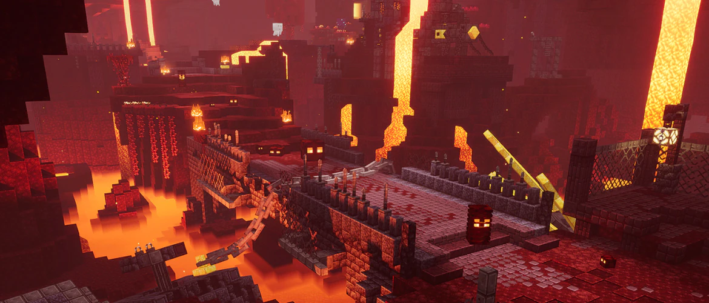
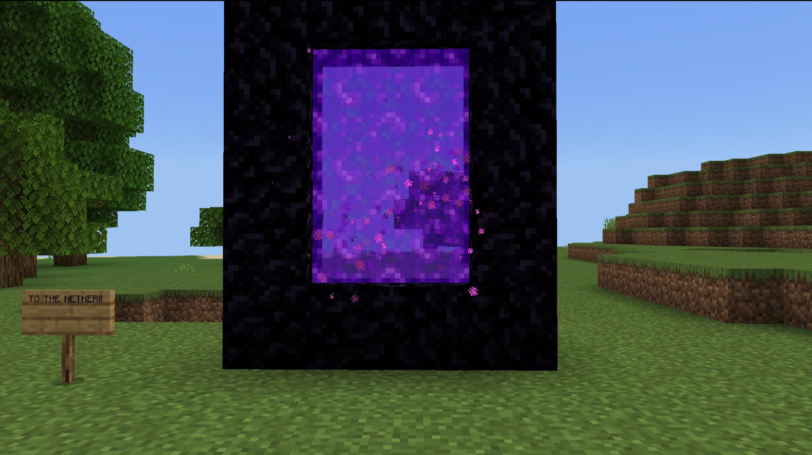

Where to Stay
The White Mountains of New Hampshire has a wealth of accommodations to suit every need and taste. Everything from Grand Resorts to quiet campgrounds in the midst of our beautiful natural beauty.

Hiking Tips
One of most important things when it comes to hiking in the great outdoors is packing accordingly. Here are a few tips:
- Bring layers of clothing
- Pack sunscreen and bug spray
- Carry extra water just in case
- Pack light

Safety Concerns
Be sure to prep well for the cold weather and conditions of the mountain!
- Look out for signage and warnings
- It's always safer to hike with others
- Be sure to have a radio on you for emergencies